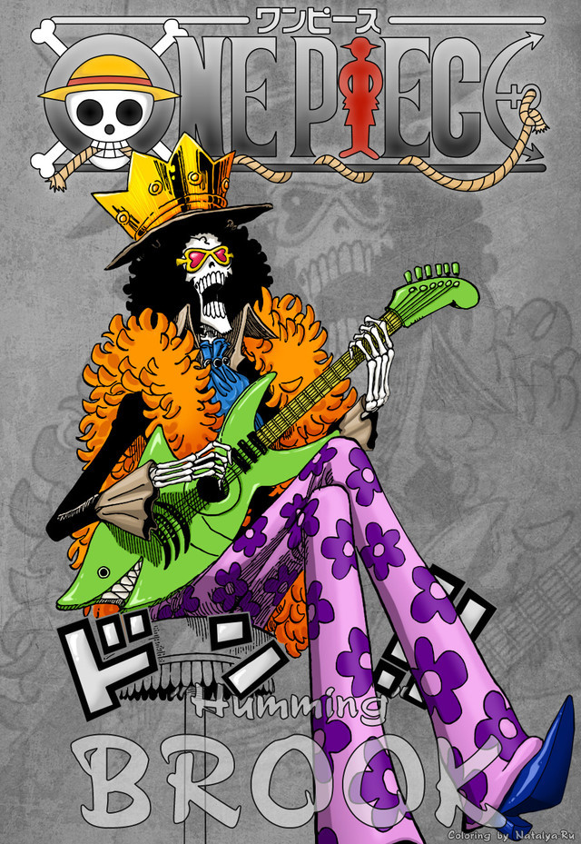

“鼻歌”&“灵魂之王”布鲁克（ブルック/Brook）
初次登场：漫画第1话
年龄：88岁→90岁【在人间时享年38岁】
生日：4月3日
血型：X型
身高：266cm（帽高约20cm）
故乡：西海
身份：原某国护卫战团团长→伦巴海贼团代理船长&剑士&音乐家→草帽海贼团音乐家
特长：乐器、剑术
爱好：演奏，喝红茶，牛奶，说骷髅冷笑话
梦想：环绕世界一周到伟大航道双子岬跟伙伴鲸鱼“拉布”重逢。
恶魔果实：超人系▪黄泉果实
武器：超人系▪黄泉果实
悬赏：3300万→8300万（德雷斯罗萨篇）
原本是某国护卫队团长，后加入伦巴海贼团，50年前跟鲸鱼拉布约定在“双子峡”重逢。后来在魔幻三角地带遇到敌人并遭遇毒手，因黄泉果实的能力，灵魂走出黄泉并准备回身体时，在魔幻三角地带迷路一年，找到的身体已变成骷髅，但爆炸头仍然存在，自此他只能以骷髅状态生存。幽灵岛战役结束后，从路飞口中得知伙伴拉布现在平安无事的消息，为了履行和拉布的约定，才正式加入草帽海贼团。